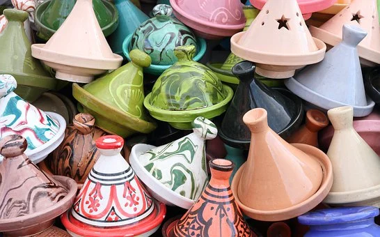
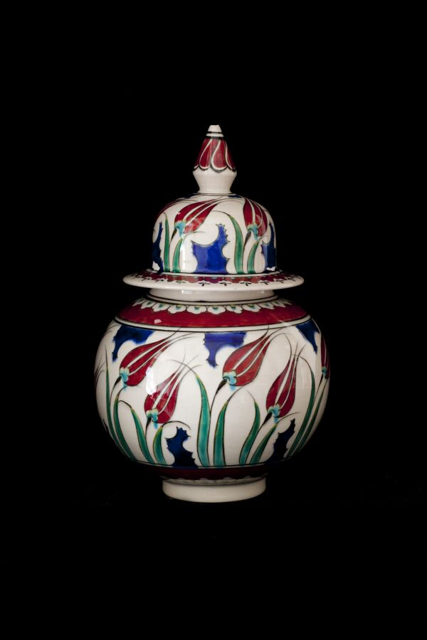

Tajine Cuisson
|
Plat traditionnel en terre cuite vernissée venant des pays du Maghreb, le plat à tajine cuisson en terre cuite est composé de deux parties, le plat creux et rond qui reçoit les aliments pour la cuisson, et le couvercle, de forme conique.Cuisinez dans la plus pure tradition marocaine avec nos tajines de cuisson !
|

Vase Marocain
|
Issus de l'artisanat marocain, nos vases marocains en terre cuite sont sans exception peints et vernis à la main, pour un rendu original, coloré, et de qualité. Chacun de nos vases et de nos jarres sont en terre cuite, pour une durée de vie optimale.
|